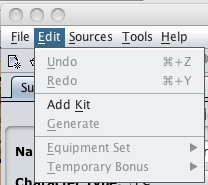

These are the Edit menu options that are available to use to modify characters within PCGen. These options are used for starting a new PC, loading an existing PC, or exporting a currently loaded PC to a file.
The Undo
The Redo
The Add Kit
The Generate
The Equipment Set
The Temporary Bonus